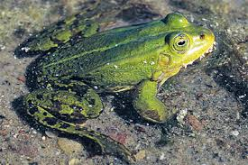
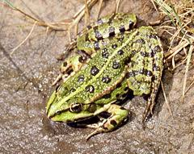

Żaba jeziorkowa jest najmniejszą żabą w Polsce, która należy do żab zielonych.  Występuje głównie w środkowej i wschodniej części Europy, gustuje w małych, zarośniętych stawach, rowach i jeziorkach. Zamieszkuje obszary nizinne. Prowadzi ziemno-wodny tryb życia, aktywna w dzień. Gdy zbiornik wysycha udaje się w poszukiwaniu innego. Sen zimowy spędza natomiast na lądzie od września/października do końca kwietnia. Wyprawy na zimowiska zaczyna końcem sierpnia i przebywa drogę nawet do 15km. Bardzo dobrze pływa oraz świetnie radzi sobie na lądzie.
Jej grzbiet ma jaskrawozielony kolor, który jest pokryty niewielką ilością ciemnych plamek. Wzdłuż grzbietu widoczna jest jasna linia kręgowa nazywana rowkiem. Na jej pośladkach i w pachwinach występują żółte nieduże plamy, które tworzą marmurkowy motyw, który pozwala nam odróżnić żabę jeziorkową od żaby wodnej, która jest bardzo podobna. Kolejnym elementem pozwalający powiedzieć jaka to żaba są duże modzele podeszwowe o ostrych krawędziach na tylnich kończynach. Strona brzuszna jest biała (u okazów z północy może być również brązowa lub czarna).
Ma duże i wystające oczy, o żółtym kolorze tęczówek. Źrenice mają kształt elipsy i są poziome. Żaba jeziorkowa nie posiada gruczołów przyusznych i plam skroniowych, za to obecne są bardzo widoczne błony bębenkowe. Samce posiadają białe i parzyste worki rezonacyjne(wzmacniają wydawane dźwięki).
zaczyna się od kwietnia do maja, u żab jeziorkowych przejawia się terytorializm, Żaby wydają z siebie charakterystyczny głos "koak-koak"
U samców: pojawiają się na pierwszych palcach przednich kończyn szare modzele godowe.
U samic: składają od 500-4500 jaj.
W diecie przeważają bezkręgowce tj. pajęczaki, mięczaki oraz owady.
Gatunek ten w CKGZ(czerwonej księdze gatunków zagrożonych) ma status LC, czyli nie jest zagrożony wymarciem, jednak w Polsce znajduje się pod całkowitą ochroną. Wrogami natomiast są ptaki(najbardziej bocian, czapla), ssaki drapieżne, duże ryby (np. szczupak, sum).
to płaz uważany za hybrydę żaby jeziorkowej i śmieszki. Obszar występowania to środkowa i wschodnia część Europy. Żaba wodna zamieszkuje większe zbiorniki wodne na nizinach, ale można ją także spotkać w górach do wysokości 1550 m n.p.m.
Prowadzi wodno-lądowy tryb życia. Głównie przesiaduje na brzegu zbiornika wodnego. Gdy poczuje się zagrożona, skacze do wody i nurkuje na jego dno. W okresie godowym żaby te odzywają się charakterystycznym głosem "errr". Aktywna w dzień. Gdy zbiornik wysycha, wędruje w poszukiwaniu innego. Zimuje na dnie zbiorników wodnych lub na lądzie od września-października do marca. Jest dość zwinna. Po ziemi porusza się długimi skokami, w wodzie świetnie pływa i nurkuje. Na ofiarę wyczekuje w bezruchu. Może wędrować i kolonizować obszary odległe o 2,5 km.
Grzbiet ma kolor jaskrawozielony i pokryty jest nielicznymi ciemnymi plamkami. Wzdłuż grzbietu biegnie jasna linia kręgowa. W pachwinach oraz na pośladkach nie występują żółte niewielkie plamy, co odróżnia ją od żaby jeziorkowej, bardzo do niej podobnej. Brzuszna strona ciała jest biała. Samce w odróżnieniu od samic mają worki rezonacyjne. Palce stóp są spięte błoną pławną. Błony bębenkowe są dobrze widoczne. Parotydy nie występują. Brak też plam skroniowych. Źrenice oczu są poziome w kształcie elipsy, tęczówki są pomarańczowe lub złociste.
Pora godowa rozpoczyna się od kwietnia do maja. Samica składa skrzek w postaci kulistych kłębów, które zawierają od 1700 do 11 000 jaj, których średnica wynosi 0,9-2,3 mm. Jedna samica może składać jaja różnej wielkości. Większość potomstwa ginie już w fazie rozwoju embrionalnego. Większą żywotność wykazują mieszańce z żabą śmieszką i jeziorkową.
Owady o dziennym trybie życia, dżdżownice, pająki, ślimaki. Czasem też zjadają małe kręgowce jak ryby, traszki, żaby własnego gatunku, ryjówki.
Gatunek ten nie jest zagrożony wymarciem. Ma status LC w Czerwonej Księdze Gatunków Zagrożonych.
To płaz z rodziny żabowatych. Nazwa pochodzi od głosu, jakie wydaje samiec podczas godów. Występuje w Europie i część Azji. W Polsce jest niezbyt pospolita. Żaba śmieszka jest największym przedstawicielem żab zielonych. Maksymalny obszar występowania pionowego to 2000 m n.p.m. w Bułgarii, zaś w Polsce jest to 350 m n.p.m. Zwykle jednak preferuje niziny. Żabę śmieszkę można spotkać nad brzegami jezior, starorzeczy, stawów, cieków wodnych. Dość dobrze znosi lekkie zasolenie wody.
Preferuje duże zbiorniki wodne. Jest aktywna w dzień. Sen zimowy odbywa na dnie wód. Lubi się wygrzewać na słońcu. Zaniepokojona nurkuje na dno zbiornika. Na lądzie porusza się dużymi skokami. Jest płazem żarłocznym. Czasem atakuje zwierzęta większe niż jest sama w stanie połknąć. Samce przejawiają terytorializm podczas godów.
Skóra ma kolor oliwkowozielony lub oliwkowobrązowy. Na ciele znajdują się ciemnobrązowe plamy. Wzdłuż grzbietu biegnie jasnozielony pasek. Strona brzuszna jest biała, pokryta czarnymi plamkami. Nie ma plam skroniowych
Gody zaczynają się w maju i trwają do czerwca. Po przebudzeniu się ze snu zimowego żaba śmieszka wędruje do najchętniej niewielkiego zbiornika wodnego na rozród. Samce nawołują samicę za pomocą głosu przypominającego śmiech. Samica składa skrzek w postaci nieregularnych kłębów. Liczba jaj waha się w granicach 6000-16 000 sztuk. Jaja właściwe mają średnicę 1,5-2 mm, z otoczką 6-8 mm. Rozwój kijanek trwa 4-7 dni. Kijanki są duże, osiągają 7-10,5 cm. Osiągają długość do 12 cm. Młode żabki mają długość 2,5-3,5 cm.
Stawonogi, dżdżownice, ślimaki, czasem także małe kręgowce.
Gatunek ten nie jest zagrożony wymarciem. Ma status LC w Czerwonej Księdze Gatunków Zagrożonych. W Polsce żaba śmieszka znajduje się pod całkowitą ochroną prawną.